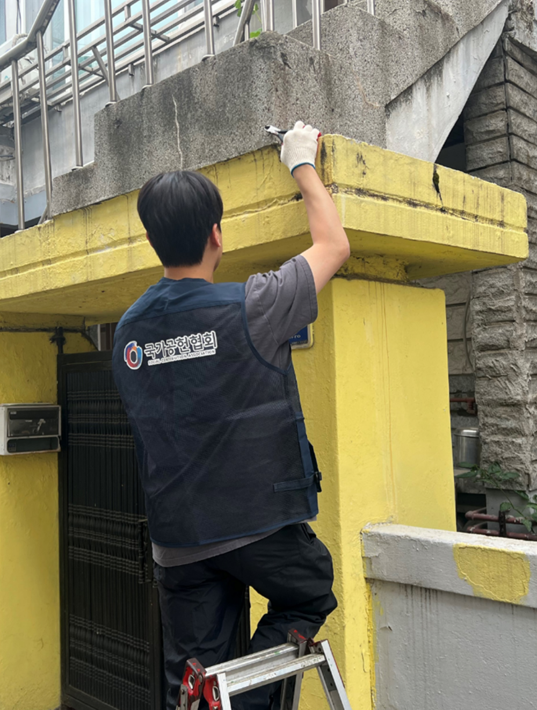
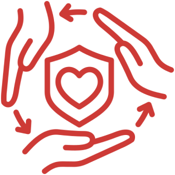
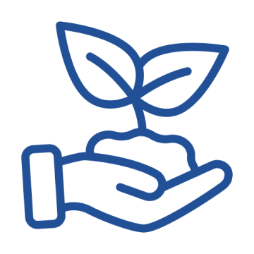

국가공헌협회의 미션과 비전에 함께해 주세요.
영웅들의 희생을 기억하고 그들의 내일을 지키는 가장 확실한 방법은 연대입니다.
국가공헌협회의 걸음에 파트너로 동행해 주세요.
대한민국의 오늘을 가능하게 한 위대한 헌신,
영예로운 예우로 보답합니다.
사단법인 국가공헌협회는
대한민국을 위해 목숨을 바쳐 헌신한 독립유공자 후손, 참전용사,
순직 군인∙소방관∙경찰관가정이 마땅히 누려야 할 명예를 회복하고,
그들의 안정적인 삶을 보장하기 위해 설립된
보훈∙유공자 지원 특화 비영리 공익법인입니다.
역사를 잊은 공동체에게는 미래가 없습니다.
고령화와 경제적 고립 속에서 외롭게 투병 중인 유공자분들의 현실은
우리 사회가 가장 시급하게 해결해야 할 구조적 과제입니다.
본 협회는 일회성 위문을 넘어, 실태조사에 기반한 맞춤형 구호와
제도권 밖의 보훈 사각지대를 선제적으로 발굴하는
민간 보훈 인프라의 핵심 역할을 수행합니다.
사람은 바뀌어도, 영웅을 향한
국가공헌협회의 사명은 변하지 않습니다.
안녕하십니까. 사단법인 국가공헌협회에 방문해 주신
후원자 및 파트너 기관 관계자 모든 여러분께 깊은 감사를 드립니다.
오늘날 우리가 누리는 평화와 번영은 대한민국을 위해 자신을 바친 수많은 영웅들의 고귀한
희생 위에 세워졌습니다. 사단법인 국가공헌협회는 인적 구성의 변화와 세대의 흐름 속에서도
‘국가유공자 예우 및 보훈 사각지대 해소’라는 설립 본연의 사명을 흔들림 없이
수행하기 위해 시스템으로 움직이는 전문 공익법인입니다.
우리는 개인이 아닌 조직의 엄격한 방향성을 바탕으로, 제도권 밖에서 경제적 고립과
고령화로 고통받는 유공자 가정을 발굴하고 실질적인 삶의 질 개선을 이뤄내고 있습니다.
국가공헌협회가 지향하는 보훈은 단발성 원조를 넘어, 영웅들의 명예를
영속적으로 자산화 하는 지원 체계입니다.
기부자 여러분의 소중한 기부금은 협회의 가장 엄격한 책임이자 자산입니다.
본 협회는 법적·행정적 기준을 상회하는 철저한 내부 통제와 투명경영을 조직의 최우선 가치로 삼아,
모든 재정 집행 결과를 명확하게 공시하고 사회적 책무를 다할 것을 약속드립니다.
대한민국의 과거를 예우하고, 현재를 치유하며, 미래를 투명하게 열어가는 국가공헌협회의
지속 가능한 여정에 든든한 파트너로 함께해 주시기를 부탁드립니다. 감사합니다.

단체 고유의 보훈 사각지대 발굴 매뉴얼과
수혜자 데이터베이스를 기반으로 사업을
일관성 있게 추진합니다.
정부 부처, 지자체, 보훈 유관 기관과의
복지 인프라 체제를 확립하여 민간 보훈 지원의
효율성을 제도적으로 보장합니다.
투명한 운영을 위해 매년 재정 현황을 홈페이지에
공개하며, 이를 통해 단체의 건전성을 확인할 수
있습니다.
대한민국 참전유공자의 평균 연령은 80대 중후반으로,
이분들을 예우하고 지원할 수 있는
시간적 여유가 많지 않습니다.
행정적 요건 미비나 복잡한 입증 절차로 인해
공적 보훈 혜택을 받지 못하는
미등록 유공자 가정이 여전히 존재하며,
이들에 대한 민간 차원의 긴급구호가 시급합니다.
독립유공자 및 순직 공무원의 후손들이
경제적 고립으로 인해 학업을 중단하지 않도록 지원하는 것은
공동체의 미래를 위한 필수적 투자입니다.
행정관청의 비영리법인 설립 및 감독에 관한 규칙을 엄격히 준수하며,
정기적으로 주무관청에 사업 실적 및 결산 보고를 성실히 이행하고 있습니다.
법인의 목적사업에 충실히 사용하기 위하여 예산을 편성하고 집행하며,
적법한 의결을 통해 공정하게 집행됩니다.
경영진과 분리된 감시 시스템을 상시 가동해
예산 집행의 효율성과 회계 처리의 적정성을 점검합니다.
회계연도 종료 후에는 지출 증빙을 전수 조사하여
자금 운용상의 오류와 리스크를 사전에 차단합니다.
주무관청 보고 절차와 별개로, 후원자분들과의 신뢰를 유지하기 위해
협회 공식 웹사이트를 통해 매월 / 연간 모금 현황 및 주요 목적사업 집행 내역을
자발적으로 투명하게 공개합니다.
대한민국의 자유를 구축한 독립유공자분들과
참전용사분들은 현재 초고령화와 사회적 소외 속에
놓여 있습니다.
이 분들의 명예를 회복하고
마지막까지 국가가 기억하게 만드는 것은
시혜적 복지가 아닌
공동체의 마땅한 법적·도덕적 의무입니다.
정부의 공적 보훈 체계가
행정적·법률적 요건 미비로 미처 다 채우지 못하는
'복지 틈새'의 고령 유공자 가정을 구호합니다.
빈곤과 질병의 이중고에서
이들의 생존권을 보장하는 것이
협회 설립의 본연의 목적입니다.

세대 간 상생 공동체 구축
순직 영웅들의 가정을 돌보고
후손들에게 자원을 집중하는 것은,
과거의 희생이 미래의 자긍심으로 이어지게 하는
사회적 선순환 구조를 완성하는 일입니다.
데이터에 기반한 위기 가구 실태조사 매뉴얼을
활용하고, 지자체·보훈지청과의
인프라를 구축하여 행정망에서 누락된
보훈 소외 계층을 선제적으로 발굴합니다.
일회성·소모성 위문을 배제하고,
고령, 유공자 주거 환경의 전면 개보수 및
긴급 의료•생계 매칭 등 수혜자가 체감하는
실효적 솔루션에 재원을 집중합니다.

복지 거버넌스 및 파트너십 확장
기업의 CSR/ESG 경영 지표와
유기적으로 결합하는 보훈 사회공헌 모델을 제시하여,
민간 자원과 공공 인프라를 잇는
거점 플랫폼으로서의 역할을 완성합니다.
국가공헌협회의 미션과 비전에 함께해 주세요.
영웅들의 희생을 기억하고 그들의 내일을 지키는 가장 확실한 방법은 연대입니다.
국가공헌협회의 걸음에 파트너로 동행해 주세요.